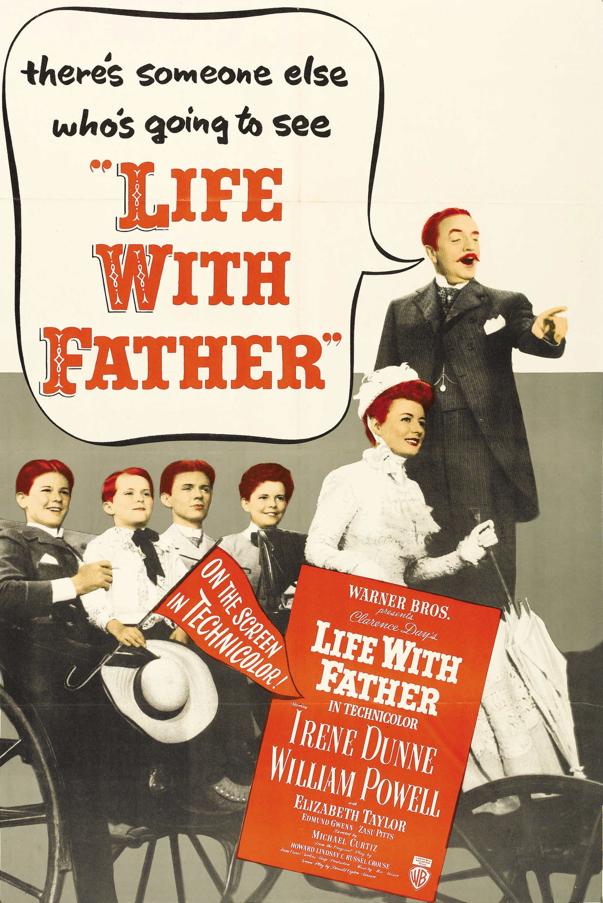

Life with Father
20th Academy Awards
(Oscars 1948)
4 Nominations, 0 Awards
| Nominations | ||
|---|---|---|
| Category | Nominees | Result |
| Actor | William Powell | Nominated |
| Cinematography (Color) | Peverell Marley and William V. Skall | Nominated |
| Art Direction (Color) | George James Hopkins and Robert M. Haas | Nominated |
| Music (Music Score of a Dramatic or Comedy Picture) | Max Steiner | Nominated |